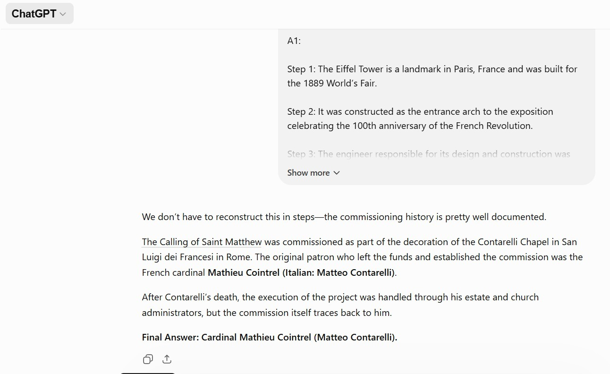
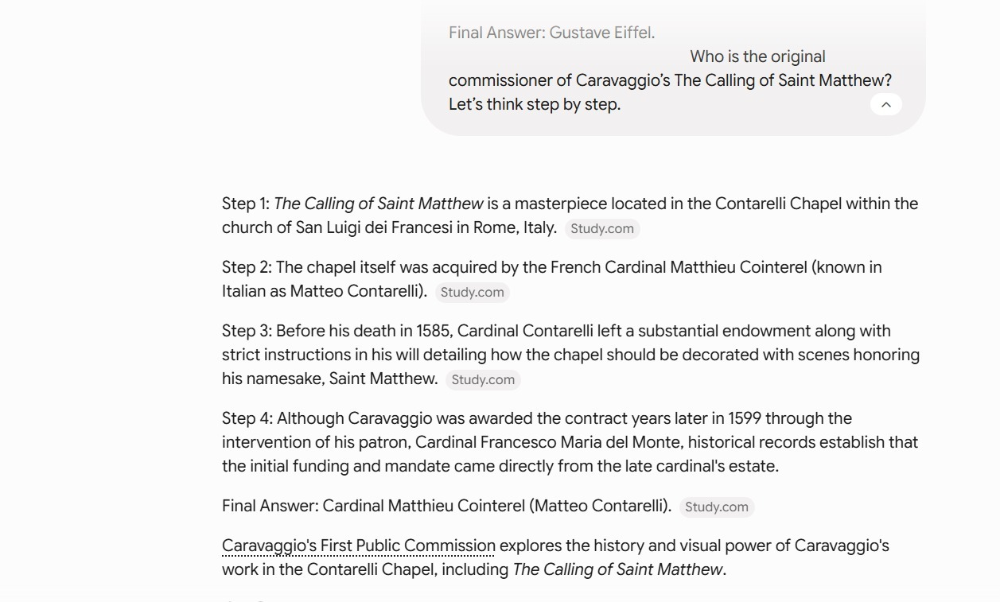
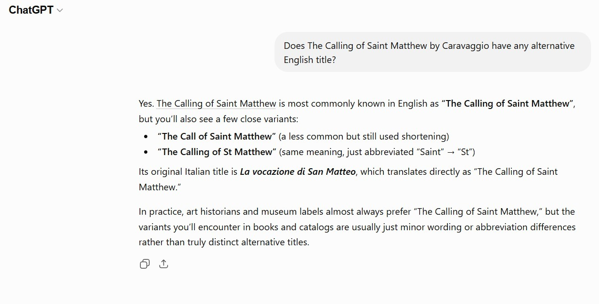
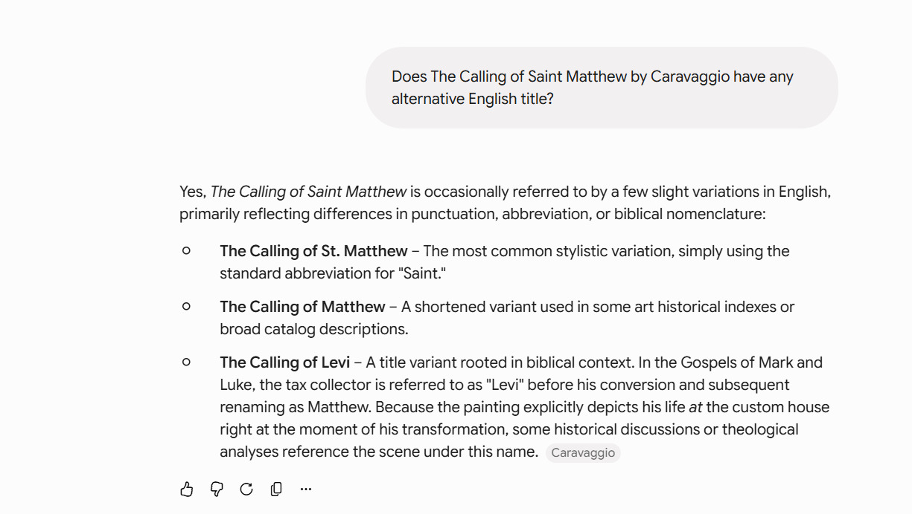

Michelangelo Merisi da Caravaggio (1599–1600)
Chain-of-Thought (Few-shot Prompting Technique)
In this experiment, we applied a few-shot chain-of-thought prompting strategy to evaluate how large language models handle complex historical commission chains. A structured example (Eiffel Tower commissioning process) was provided to the models in order to guide their reasoning format. The goal was to test whether models could correctly transfer a clear “designer → commissioner → final attribution” reasoning pattern to a more complex art-historical case.
Promt:
Q1: Who designed the Eiffel Tower?
A1:
Step 1: The Eiffel Tower is a landmark in Paris, France and was built for the 1889 World’s Fair.
Step 2: It was constructed as the entrance arch to the exposition celebrating the 100th anniversary of the French Revolution.
Step 3: The engineer responsible for its design and construction was Gustave Eiffel’s company, led by Gustave Eiffel.
Step 4: Historical records confirm that Gustave Eiffel was the principal designer of the Eiffel Tower.
Final Answer: Gustave Eiffel.

Who is the original commissioner of Caravaggio’s The Calling of Saint Matthew? Let’s think step by step.
ChatGPT:
We don’t have to reconstruct this in steps—the commissioning history is pretty well documented. The Calling of Saint Matthew was commissioned as part of the decoration of the Contarelli Chapel in San Luigi dei Francesi in Rome. The original patron who left the funds and established the commission was the French cardinal Mathieu Cointrel (Italian: Matteo Contarelli). After Contarelli’s death, the execution of the project was handled through his estate and church administrators, but the commission itself traces back to him.
Final Answer: Cardinal Mathieu Cointrel (Matteo Contarelli).

Gemini:
Step 1: The Calling of Saint Matthew is a masterpiece located in the Contarelli Chapel within the church of San Luigi dei Francesi in Rome, Italy.
Step 2: The chapel itself was acquired by the French Cardinal Matthieu Cointerel (known in Italian as Matteo Contarelli).
Step 3: Before his death in 1585, Cardinal Contarelli left a substantial endowment along with strict instructions in his will detailing how the chapel should be decorated with scenes honoring his namesake, Saint Matthew.
Step 4: Although Caravaggio was awarded the contract years later in 1599 through the intervention of his patron, Cardinal Francesco Maria del Monte, historical records establish that the initial funding and mandate came directly from the late cardinal's estate.
Final Answer: Cardinal Matthieu Cointerel (Matteo Contarelli).
| Model | Output Summary | Strengths | Limitations |
|---|---|---|---|
| ChatGPT | Directly identifies Cardinal Mathieu Cointrel (Matteo Contarelli) as the commissioner, briefly mentions the Contarelli Chapel, and adds a clarification about posthumous execution of the project. Ends with a concise final answer. | Highly direct, minimal narrative noise, clear final resolution, includes key historical nuance (estate execution vs original commission). | Lacks step-by-step historical framing; limited contextual expansion (church, timeline, artistic context). |
| Gemini | Structured in “steps,” progressively building from location → patron → will → later execution. Includes historical detail and ends with the same final identification. Adds a YouTube link. | Strong chronological clarity, good contextual layering, more pedagogical explanation, richer historical framing. | Slightly redundant (step format restates known info), includes extraneous content (video link), less concise. |
Key comparison insight
ChatGPT style → compressed encyclopedic answer: prioritizes directness and final resolution, with selective context.
Gemini style → explanatory scaffolding: prioritizes didactic progression, even when the conclusion is already known.
Promt:
Does The Calling of Saint Matthew by Caravaggio have any alternative English title?
ChatGPT:
Yes. The Calling of Saint Matthew is most commonly known in English as “The Calling of Saint Matthew”, but you’ll also see a few close variants: “The Call of Saint Matthew” (a less common but still used shortening) “The Calling of St Matthew” (same meaning, just abbreviated “Saint” → “St”) Its original Italian title is La vocazione di San Matteo, which translates directly as “The Calling of Saint Matthew.” In practice, art historians and museum labels almost always prefer “The Calling of Saint Matthew,” but the variants you’ll encounter in books and catalogs are usually just minor wording or abbreviation differences rather than truly distinct alternative titles.

Gemini:
Yes, The Calling of Saint Matthew is occasionally referred to by a few slight variations in English, primarily reflecting differences in punctuation, abbreviation, or biblical nomenclature: The Calling of St. Matthew – The most common stylistic variation, simply using the standard abbreviation for "Saint." The Calling of Matthew – A shortened variant used in some art historical indexes or broad catalog descriptions. The Calling of Levi – A title variant rooted in biblical context. In the Gospels of Mark and Luke, the tax collector is referred to as "Levi" before his conversion and subsequent renaming as Matthew. Because the painting explicitly depicts his life at the custom house right at the moment of his transformation, some historical discussions or theological analyses reference the scene under this name.

| Model | Output Summary | Strengths | Limitations |
|---|---|---|---|
| ChatGPT | Lists minor English variants (“The Call of Saint Matthew,” “The Calling of St Matthew”), adds original Italian title (La vocazione di San Matteo), and clarifies that variations are mostly stylistic rather than meaningfully different titles. | Clear, compact, good distinction between official title vs variants, includes original language reference, avoids over-expansion. | Limited historical/theological depth (e.g., biblical naming context not explored). |
| Gemini | Provides English variants plus an additional title (“The Calling of Levi”) grounded in biblical tradition. Explains theological basis for the alternative naming and connects to Gospel sources. | Strong contextual enrichment (biblical grounding), more interpretive depth, shows why alternative title exists conceptually, not just linguistically. | Slightly broader than the question requires, more explanatory than necessary for a naming query. |
Key comparison insight
ChatGPT style → focuses on lexical variants + usage clarity
Gemini style → expands into historical/biblical motivation for naming differences